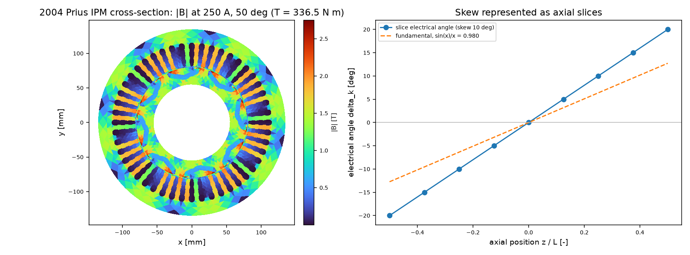
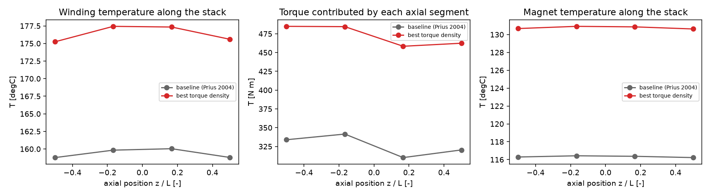
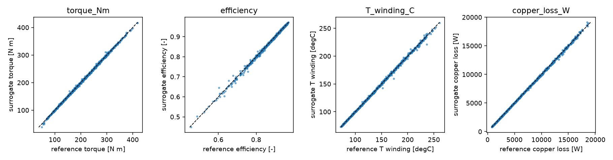
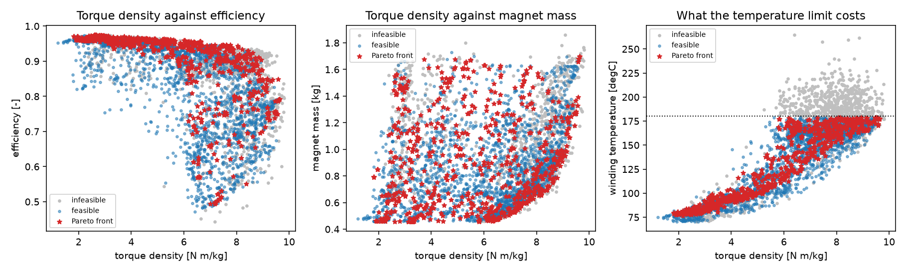
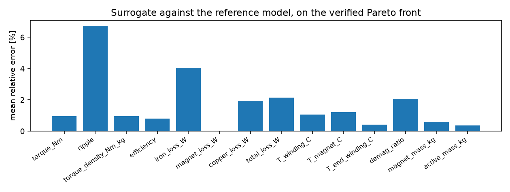
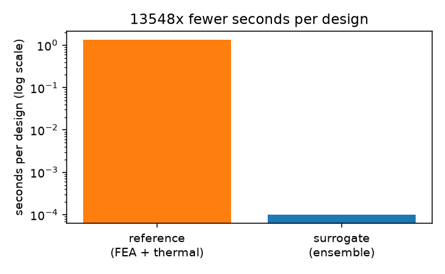

A large physics model — built once, shipped with its error bars — that replaces the FEA and the thermal solve inside the design loop, so a motor can be optimised over thousands of designs without a single finite-element call.
An electric motor is the canonical multiphysics object. The stator current produces torque and heat; the heat raises the winding and magnet temperatures; the magnet temperature lowers the remanence, which lowers the torque and eats the demagnetisation margin; the coolant flow sets how much heat leaves; the stack length and the skew change all of the above at once. Every one of those couplings is real, and every one of them is expensive to evaluate, because the electromagnetic side is a nonlinear magnetostatic finite-element problem that must be solved at several rotor positions per operating point.
The engineering consequence is that motor design still lives with a small number of FEA runs and a large amount of experience. The alternative explored here is to spend the FEA once — on a designed set of cases — and learn the whole chain from geometry and operating point to performance, loss, temperature and demagnetisation margin. The learned model is not a curve fit per quantity: it is one map from the same eleven design variables to the fourteen physics outputs plus three axial profiles, shipped as a pretrained artefact with a model card that states its held-out error on every one of them.
Before this work the library had most of the physics and all of the optimisation scaffolding, but not the loop that connects them. The inventory matters, because the model added here is built out of these pieces rather than next to them.
| Capability | Where | What it does |
|---|---|---|
| 2-D nonlinear magnetostatic FEA of a machine cross-section | machines.IPMMachine, machines.prius_2004 |
Torque by Maxwell stress and by co-energy, flux linkage, back-EMF, L_d/L_q,
MTPA, iron and magnet loss — the 2004 Toyota Prius geometry, verified against published FEA. |
| Conforming air-gap mesher with a moving band | machines.mesher |
One pole and one slot pitch meshed with every polygon edge as a mesh edge, then copied around the circle. |
| Catalogue steel and magnet grades | machines.steel |
B–H curve and loss table of M400-50A, NdFeB with its reversible Br(T) coefficient. |
| End windings outside the cross-section | machines.endwinding, machines.drive |
End-turn length, resistance and leakage of the coil ends; flux maps and drive-cycle energy. |
| Lumped thermal network, one node per part | machines.thermal.machine_network |
Seven nodes (yoke, teeth, winding, end windings, rotor, magnets, shaft) and a demagnetisation margin
against Hcj(T). |
| Design-space optimisation with a surrogate | pinneapple_design.design_optimizer |
NSGA-II, gradient methods, a Gaussian-process surrogate with active learning, hypervolume, and re-verification of the front by the reference solver. |
| Magnetic topology optimisation | pinneapple_design.topology.magnetic |
Rotor material distribution against mean torque. |
| An industrial preset for the Prius motor | pp.presets.load("ipm_traction_motor") |
Torque, ripple, MTPA and voltage with a data sheet, a surrogate built on demand, an inversion and a validation against Yang et al. (2013). |
| The 3-D surrogate pattern, proved on another domain | pinneapple_design.aero (aircraft) |
MLP coefficients over airfoil + planform, a whole-aircraft evaluator on top, NSGA-II, trust from the ensemble spread, ONNX export for geometry. |
| Model zoo, trust layer, benchmarks | pp.zoo, pp.validate,
pinneapple check |
Pretrained models with SHA-256-checked weights and cards; physics audit of any prediction; equal-budget benchmarks. |
Two gaps followed from that inventory. First, the machine model was strictly two-dimensional per cross-section and the thermal network had one node per part: enough to know a hot-spot level, not its place along a stack with two cooled ends. Second, nothing assembled the chain — FEA, skew, loss, cooling, the magnet temperature back on torque and demagnetisation — into one call, and nothing in the motor domain had a pretrained surrogate that could be evaluated a hundred thousand times.
One package, motor3d, with six modules, a pretrained artefact, tests, an example and a guide:
| Module | Contribution |
|---|---|
thermal3d.py |
The radial thermal network cut into axial segments and linked by k A / dz, with the end
windings as one node outside the stack and the water jacket spread over every yoke segment. With one
segment it reproduces machines.thermal.machine_network to round-off, which is the test that
says it is the same physics and not a second opinion. |
model.py |
The coupled chain in one call: FEA at the operating point, skew by axial slices, iron/magnet/copper loss, cooling at a coolant flow, the magnet temperature corrected back onto torque, iron loss and the demagnetisation margin, and the axial profiles. Designs past the reversible range of the magnet grade are reported as not assessable instead of scored. |
design.py |
Eleven design variables declared once — rotor cross-section, stack, skew, operating point, coolant flow — with units and bounds. The design space, the dataset columns and the network inputs are all derived from that single declaration. |
dataset.py |
A design of experiments over that box with the geometry test as a feasibility filter, evaluated in parallel processes and stored with its provenance (method, seed, model configuration, cost, rejection rate). |
surrogate.py |
The ensemble: five to eight networks, log-space training for strictly positive outputs, a held-out error per output, a validity box, an extrapolation measure, constant-output detection, and SHA-256-checked weights with a model card. |
optimize.py |
The design problem and the NSGA-II search that runs entirely on the surrogate, the Pareto front, and the re-check of the front with the reference model. Constraints are posed on the conservative value (mean + 1σ of the ensemble), so a design that only satisfies a limit inside the model does not enter the front. |
workflow.py |
Data → train → optimise → verify → figures → report.md, as one command with a subcommand per
step. |

Motor3DModel.solve(..., keep_fields=True).One call to IPMMachine.operating_point solves the nonlinear magnetostatic problem
−div(ν ∇Az) = J + curl(ν Br) over a set of rotor angles with sinusoidal currents
fixed in the dq frame, and returns torque per angle, ripple, ψd,
ψq and the fields. The magnet remanence is evaluated at the magnet temperature the design
currently has, not at 20 °C.
The stack is cut into n_segments slices, each at its own electrical angle
δk = (k/(K−1) − ½)·skew·p. Each slice contributes the torque of the cross-section at that
angle, so slot harmonics cancel exactly as they do in a skewed machine, and the ripple of the skewed stack is
computed from the concatenated slice waveforms. The fundamental is reduced by the classic skew factor
sin(x)/x with x = p·skew/2. That the mean torque of a 2-D slice model is otherwise
invariant to the twist is a property of the model, not an oversight: the axial flux paths that skew also perturbs
enter here through the end-winding resistance and the thermal network, and nowhere else.
Iron loss comes from the flux density over an electrical period, per element, in the element's own frame; magnet loss from the resistance-limited eddy model; copper loss from the phase resistance, which depends on the stack length and on the end-turn length computed from the coil pitch at the mid-slot radius — a genuinely 3-D quantity. The copper loss is split between the slot and the end windings in proportion to their lengths, because the two sit in different nodes of the thermal network.
The jacket conductance follows the coolant flow as flow0.8 — turbulent convection, stated
as an assumption rather than fitted. The network solves (L + Gb)T = P + GbT∞
on 5·K + 1 nodes. Its value is visible in the figure below: the winding is hottest in the middle of the stack and
cooler at the ends that face the end windings, which is a statement a one-node-per-part model cannot make.

The magnet temperature changes the remanence, and the remanence changes torque, iron loss (through
B²) and the demagnetisation margin. The reference model solves the field once at a first-guess magnet
temperature, solves the network, corrects those three quantities analytically and re-evaluates the copper loss at
the resulting winding temperature until the temperatures stop moving. That is a one-step fixed point around one FEA
solve per design; setting fea_iterations=2 re-solves the field at the converged temperature, and the
difference between the two is measured rather than assumed. The demagnetisation check compares the worst reverse
field inside every magnet element against the intrinsic coercivity of the grade at that temperature; designs whose
magnet would be pushed past the reversible range of the grade are reported as not assessable, because extrapolating
Hcj(T) through zero would produce a number with no meaning.
from pinneapple_simulation.electromagnetics.machines.motor3d import Motor3DDesign, VARIABLES for v in VARIABLES: print(f"{v.name:12s} {v.unit:8s} [{v.low}, {v.high}] {v.description}") d = Motor3DDesign.baseline() # the 2004 Prius at its published operating point d = Motor3DDesign(L=0.10, skew_deg=6.0, rpm=3000.0, flow_L_min=8.0) d.sector_errors() # [] when the cross-section can be meshed
The eleven variables are W4, H3, H0, W0, H1
(rotor cross-section, the same parametrisation the 2-D studies use), L and skew_deg
(axial), I_peak, gamma_deg, rpm (operating point) and
flow_L_min (cooling). Every one of them changes more than one output, which is the point.
from pinneapple_simulation.electromagnetics.machines.motor3d import Motor3DModel, PRIUS model = Motor3DModel() # 192-node gap mesh, 12 rotor angles, 4 axial segments r = model.solve(PRIUS) # 250 A, 50 deg, 1500 rpm, 6 L/min coolant print(r["torque_Nm"], r["T_winding_C"], r["demag_ratio"]) print(r["T_winding_profile_C"]) # the winding along the stack, end to end print(r["extra"]["v_phase_V"], r["extra"]["v_limit_V"])
A design whose cross-section the mesher refuses, or whose magnet would demagnetise, returns
valid=False with the reason and no solve: the reference model is allowed to say "this cannot be
assessed", and the dataset keeps that answer.
from pinneapple_simulation.electromagnetics.machines.motor3d import build_dataset, Motor3DDesign ds = build_dataset(1200, seed=20260101, workers=8, model=Motor3DModel(n_gap=192, n_positions=12), extra=[Motor3DDesign.baseline()]) ds.save("motor3d_data") print(ds.meta["rejection_rate"], ds.meta["seconds_per_design"])
The rejection rate is itself a result: one design in five drawn uniformly from the declared box cannot be built — polygons that cross, a magnet that leaves its pole. An optimiser that does not know this spends a fifth of its budget on geometry the mesher refuses, which is why the exact geometry test stays inside the search loop.
from pinneapple_simulation.electromagnetics.machines.motor3d import MotorSurrogate3D, SurrogateConfig surrogate = MotorSurrogate3D(SurrogateConfig(ensemble=8, epochs=3000, seed=7)).fit(ds) card = surrogate.card() print(card["heldout"]["torque_Nm"]) # mae, r2, mean_rel, p95_rel print(card["mean_r2"], card["worst_output"]) surrogate.save("motor3d-v1", version="motor3d-v1")
Each network maps the eleven normalised design variables to 25 targets: the fourteen scalars (torque, ripple, torque density, efficiency, three loss channels, three temperatures, demagnetisation ratio, two masses) and three axial profiles of four segments. Outputs that are strictly positive are trained in log space, because what matters about a 300 W loss and a 30 N·m torque is their relative error, not their absolute one. An output that does not move in the training set is detected and predicted as its constant instead of being learned — that is how the magnet eddy loss, which is zero at these speeds with solid magnets, is reported rather than modelled as noise.
| Held-out output (193 designs never trained on) | MAE | R² | mean rel. | 95th rel. |
|---|---|---|---|---|
| Torque [N·m] | 2.07 | 0.998 | 1.15 % | 2.88 % |
| Torque density [N·m/kg] | 0.054 | 0.998 | 1.08 % | 2.65 % |
| Efficiency [–] | 0.0037 | 0.992 | 0.48 % | 1.88 % |
| Copper loss [W] | 82 | 0.999 | 1.51 % | 4.21 % |
| Iron loss [W] | 35 | 0.995 | 4.04 % | 12.99 % |
| Winding temperature [°C] | 1.39 | 0.997 | 0.92 % | 2.53 % |
| Magnet temperature [°C] | 1.05 | 0.996 | 0.87 % | 2.44 % |
| Demagnetisation ratio [–] | 0.020 | 0.989 | 3.10 % | 8.20 % |
| Torque ripple [–] | 0.014 | 0.788 | 8.86 % | 20.50 % |
| mean R² over the outputs that vary | 0.983 |
Ripple is the honest weak spot: R² = 0.79, with a 95th-percentile relative error of 20 %. It is the
output that depends most on the fine structure of the slot geometry, and the one the constraints are most likely to
press against. That is the reason the constraint is not posed on the network's mean — see the next section.

from pinneapple_simulation.electromagnetics.machines.motor3d import load_pretrained, design_problem, optimize, verify_front surrogate = load_pretrained() # weights checked against the SHA-256 of the card out = optimize(design_problem(surrogate=surrogate), budget=4000, seed=0) print(out["n_evaluations"], out["designs_per_second"], out["n_reference_solves"]) ver = verify_front(out, n=8) # the only place an FEA call is spent print(ver["still_feasible"], ver["rank_agreement"], ver["errors"]["torque_Nm"])
The problem is the one a motor designer asks: maximise torque density and efficiency, minimise magnet mass,
subject to the winding temperature (180 °C, class H), the magnet temperature (140 °C, where the coercivity of a
sintered NdFeB starts to fall away), the demagnetisation ratio (below the knee, i.e. 1) and the torque ripple
(20 % peak to peak, which a traction inverter and gearbox tolerate). The search is NSGA-II from
pinneapple_design.design_optimizer, and every candidate it evaluates is a network forward pass.
mean + 1σ of the ensemble, not on its mean. A design at the limit is exactly where a one-sigma
optimistic prediction is worthless, and the first version of this study — constraints on the mean — produced a
front in which five of eight re-checked designs failed the same limits. With the conservative form, eight of eight
pass.
sector_errors() costs 2.9 ms, so it runs inside the evaluator and marks
unbuildable designs invalid instead of being learned.
Run of the study (as shipped in report.md) | Value |
|---|---|
| Designs evaluated by the surrogate | 4000 |
| Wall time of the search | 28.7 s |
| Throughput, geometry test included | 139 designs/s |
| FEA calls made by the search | 0 |
| Designs on the Pareto front | 680 |
| Best torque density | 9.64 N·m/kg (442 N·m, magnet 1.70 kg, winding 177 °C, ripple 0.168) |
| Best efficiency | 0.976 (123 N·m, winding 84 °C) |
| Reference model, per design | 1.34 s |
| Surrogate, per design | 99 µs |
| Ratio | 13 500× |

import json from pathlib import Path from pinneapple_simulation.electromagnetics.machines.motor3d from ... # see workflow._jsonable ver = verify_front(out, reference=Motor3DModel(), n=8)
Eight designs spread across the front by farthest-point sampling are re-evaluated by the reference model: 16.3 s of FEA, against the 28.7 s the surrogate search itself took. The result is a statement about the front, which is the region the optimiser actually chose — not about a random split.
| Output | mean rel. error on the front | max rel. error |
|---|---|---|
| Torque | 0.96 % | 2.54 % |
| Torque density | 0.95 % | 1.99 % |
| Winding temperature | 1.06 % | 1.83 % |
| Demagnetisation ratio | 2.05 % | 5.39 % |
| Efficiency | 0.81 % | 5.10 % |
| Torque ripple | 6.73 % | 20.64 % |
8 of 8 designs of the front remain feasible when the reference model evaluates them under the same limits, and the Spearman rank agreement on torque density between surrogate and reference is 1.000 — the front is ordered identically. The residual spread in ripple is the same number the model card reports, and it is the number to keep in mind when the ripple limit is the binding constraint of a study.


flow0.8; it is an input, not the output of a conjugate heat transfer solution. A validated
cooling model needs coefficients from measurements or from a CFD study of the actual jacket.out_of_box and extrapolation say when a design has left the data.
Beyond the box, the card's errors no longer apply.machines.verification, and the axial network reduces to the library's
seven-node network exactly — but those are consistency checks against models, not against a bench test.# the whole study: dataset, surrogate, search, verification, figures, report.md python -m pinneapple_simulation.electromagnetics.machines.motor3d.workflow all --out motor3d_run # or step by step python -m ...workflow build-dataset --n 1200 --workers 8 --out motor3d_run/dataset python -m ...workflow train --data motor3d_run/dataset --out motor3d_run/model python -m ...workflow optimize --budget 4000 --out motor3d_run/optimization.json python -m ...workflow verify --optimization motor3d_run/optimization.json --n 8 python -m ...workflow check-coupling --n 4 # cost of the one-step Br(T) correction # the worked example, with the numbers printed at every step python examples/motor_magnetics/03_multiphysics3d_surrogate.py
The test suite covers the physics reduction (one segment = the library's seven-node network, to round-off), the direction of every coupling (more skew → less torque and less ripple; more coolant → colder magnets → more torque), the deliverability of the training set, the model card, the SHA-256 check that refuses tampered weights, the search with its zero-FEA claim, the verification path, and the pretrained artefact itself.
| Path | Content |
|---|---|
pinneapple_simulation/electromagnetics/machines/motor3d/design.py | Design vector, machine geometry, skew factor |
.../motor3d/thermal3d.py | Axial-resolved lumped thermal network |
.../motor3d/model.py | The coupled multiphysics reference model |
.../motor3d/dataset.py | DOE, parallel evaluation, stored provenance |
.../motor3d/surrogate.py | Ensemble, model card, SHA-256 loading |
.../motor3d/optimize.py | Design problem, NSGA-II on the surrogate, verification |
.../motor3d/workflow.py | CLI, figures, report.md |
.../motor3d/data/motor3d-v1/ | Pretrained weights (1.2 MB) and model card |
.../motor3d/data/train_v1/ | The training set with its metadata |
tests/test_motor3d.py | 16 tests |
examples/motor_magnetics/03_multiphysics3d_surrogate.py | Worked example |
docs/guides/motor3d_surrogate.md | The guide |
Motor3DDesign, VARIABLES, NAMES, BOUNDS # the design vector, declared once Motor3DModel(n_gap, n_positions, n_segments) # .solve(design) -> every quantity # .evaluate(X) -> arrays over designs AxialThermalModel(geometry, data, n_segments) # .steady(P), .powers(...) build_dataset(n, seed, workers, model) # -> MotorDataset (.save / .load) MotorSurrogate3D(config).fit(dataset) # .predict, .card, .save, .load load_pretrained() # the shipped model, hash-checked design_problem(surrogate=...) # objectives + limits + design space optimize(problem, budget, seed) # -> front, best designs, cost verify_front(result, reference, n) # the FEA re-check of the front benchmark(surrogate, reference, n) # seconds per design, both models
PINNeAPPle — physics AI that tells you when to trust it. This document and
the artefacts it describes are part of the repository at
pinneapple_simulation/electromagnetics/machines/motor3d.